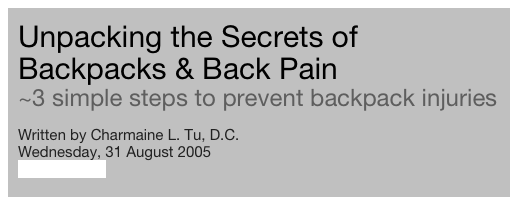

Charmaine L. Tu, D.C.
chiropractor
It’s true…Kids are getting smarter. --More books, more learning, and unfortunately, more back injuries due to overloaded, poorly fitting backpacks. Countless times have I sat in three o’clock traffic and just cringed at the sight of kids dragging their school bags at their ankles and teenagers with their backpacks at the back of their knees. As most kids walk to and from school, they average 370 walks a year!
Far too often I have said “You’re too young for back pain!” The increasing number of children and young adults with back pain is primarily from backpack misuse. Unfortunately, it’s not just back pain—headaches, neck pain, and shoulder discomfort are very common complaints as well. These symptoms are an indication of potential long term damage to your child’s spine!
In order to avoid and minimize injury to your child, or anyone improperly wearing a back pack, simply follow these three guidelines:
1. Choose a backpack that fits
I remember my niece’s first day of kindergarten. I stood in horror at the sight of her Barbie back pack – Itty bitty straps supporting a one compartment back pack that was almost as tall as she was. I whispered to her mother “If she puts anything in that thing, she’s going to fall over! We’re not starting off on the right foot at all.”
For a young child/adult, a back pack should not exceed the width of the shoulders. The height of the backpack should stretch from the top of the shoulders and should approximate at the waist.
Choose a bag that has multiple compartments.
Ensure that the bag has adjustable, wide, padded shoulder straps.
Try to purchase a bag with a waist belt. A waist belt helps to take load off the shoulders.
2. Pack correctly
Keep heavier objects close to the back, and bulky loose objects away. Utilize the compartments of your bag so to promote weight distribution and prevent shifting of heavy objects.
Leading orthopedists agree that a backpack should not exceed 10% of your child’s body weight. A heavy backpack causes forward leaning and stress to the back. The reality is that our kids ARE taking heavy textbooks home. This makes it even more important that your child is fitted with an ergonomically correct backpack.
3. Wear the back pack correctly
Adjust the straps so the back pack sits comfortably against the back and at waist level. Do not allow the back pack to dangle more than 3 inches below waistline.
Encourage your child to use both straps. Side leaning can lead to back and neck muscle spasms.
If there is a waist belt, utilize it.
Encourage your child to stand up straight and avoid forward or side leaning.
These simple three steps are healthy practices that can help prevent a nightmare of back and neck discomfort.
If you’re having difficulty choosing a backpack, consider “Airpacks.” These back packs are not only well compartmentalized, but are specifically designed with a lumbar or low back support. (www.airpacks.com) Another great alternative is a backpack from REI. Though their back packs are designed for the great outdoors, their packs are typically well compartmentalized and equipped with wide straps and waist belt.
If you or your child is experiencing discomfort from back pack use, call your Doctor of Chiropractic. Chiropractic is gentle and effective in treating not only back pain, but shoulder discomfort, headaches and more, without the use of drugs or surgery. It is important that your child develops correctly. Your Doctor of Chiropractic can also instruct your child on proper posture, sleeping habits, and give exercises to help strengthen muscles.
